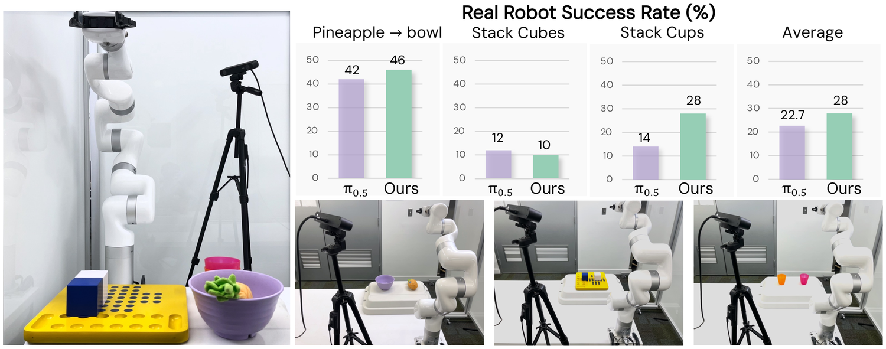
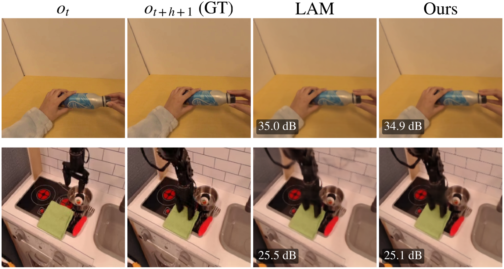
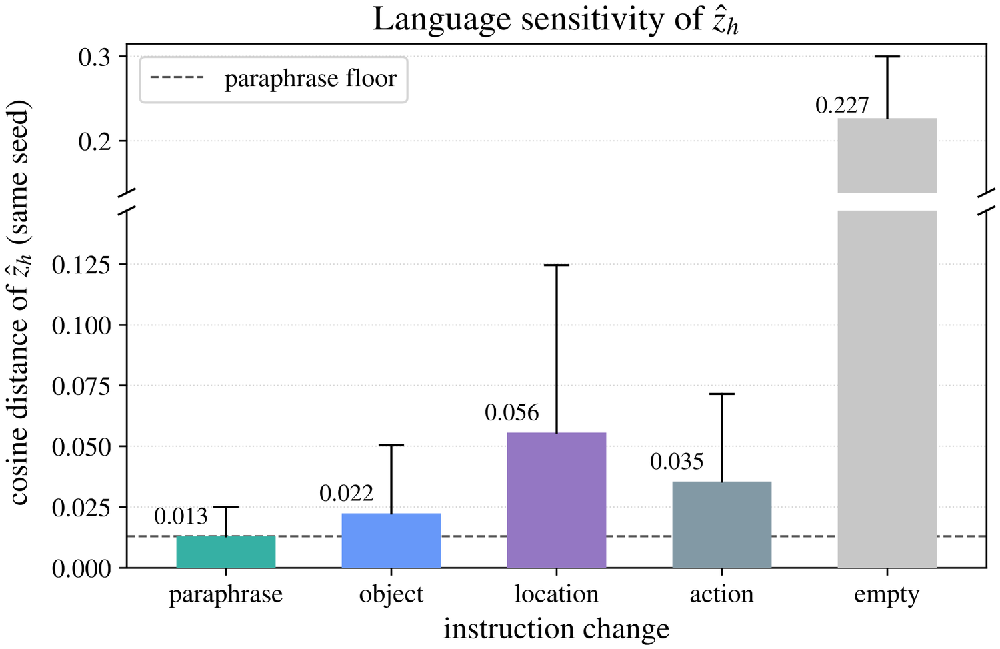

1University of Pennsylvania · 2The Hong Kong Polytechnic University
† Work done during a visit to the University of Pennsylvania.
Latent Action Models (LAMs) can capture manipulation priors from action-free videos, but discrete latents usually impose a granularity bottleneck, limiting their ability to represent fine-grained action. Recent continuous alternatives mitigate this, but they are typically used as proxies for world modeling and require a further planning step to produce executable actions. We thus introduce UniLAP, a unified continuous latent-action policy that models the latent space via flow matching and bypasses reliance on future frames during inference.
By distilling a LAM teacher with a flow-adaptive objective, UniLAP inherits the teacher's action representation while retaining the multimodal distribution of feasible behaviors. To decouple latent representations from task-irrelevant appearance, we extract a label-free motion target to isolate relevant kinematic cues from spurious visual dynamics. With the established embodiment-agnostic latent manifold, UniLAP can be easily adapted to novel platforms. Pretrained on multi-source videos at a compact 1.1B parameter scale, UniLAP outperforms state-of-the-art latent-action and Vision-Language-Action (VLA) baselines across hand pose forecasting, single-arm and humanoid manipulation, and real-world deployment.
Latent ActionAction‑Free VideoCross‑Embodiment Manipulation
We model the latent action as a continuous flow conditioned on the current observation, distilling the teacher posterior with a flow‑adaptive objective. It preserves the multimodal distribution a discrete codebook cannot, and acts without future frames, shortening the path from action‑free pretraining to control.
A motion target derived from cross‑frame correspondences in a frozen ViT grounds the latent in task‑relevant dynamics and isolates it from camera and appearance changes, with no extra factorization stage or optical flow.
The continuous latent is an embodiment‑agnostic action space shared across human and multi‑robot video. A new robot reuses it with only a fresh action decoder and light finetuning, not per‑robot retraining.
At just 1.1B parameters (590M trainable), UniLAP matches or beats latent‑action and VLA baselines up to 7B, across hand‑pose forecasting, single‑arm, humanoid, and real‑world manipulation.
UniLAP learns a shared latent policy from action‑free video across embodiments. Three components train in two stages: a continuous flow‑matching latent policy, a label‑free motion‑supervision target, and a per‑embodiment action decoder.
Frozen DINOv2 (fine spatial) and SigLIP2 (vision–language) features plus a Flan‑T5 instruction embedding condition a flow‑matching Transformer, AdaLN on the flow timestep, per‑block cross‑attention. It predicts a horizon‑16 latent chunk from the current observation, with no access to future frames.
A decoder maps the latent chunk to executable commands: proprioception modulates every step via AdaLN, while patch tokens enter through cross‑attention. It is trained from scratch with the policy lightly finetuned, no per‑robot re‑pretraining.
Prior pipelines quantize the latent into a discrete codebook; UniLAP models it as a continuous flow, preserving the multimodal distribution manipulation requires, and acting without future frames at inference.
We deploy on a 7‑DoF UFACTORY xArm7 with a single fixed third‑person ZED 2i view, comparing against π0.5 on three tabletop tasks. Following our recipe, we collect 50 teleoperated demonstrations per task, fit an 8‑DoF joint‑space decoder from scratch, and finetune the latent policy. The policy runs chunked control through a two‑process ZMQ client–server loop (observation in, a 16‑step joint chunk out), with no inverse kinematics or camera calibration.

Successful rollouts · buttons switch the object’s initial position
| Method | Pineapple → Bowl | Stack Cubes | Stack Cups | Avg. |
|---|---|---|---|---|
| π0.5 (baseline) | 42 21/50 | 12 6/50 | 14 7/50 | 22.7 |
| UniLAP (ours) | 46 23/50 | 10 5/50 | 28 14/50 | 28.0 |
Each method is evaluated over 50 rollouts per task on the physical xArm7.
Given the unseen instruction “pick up the red cup and put it into the bowl”, a known object (the red cup, seen only in cup‑stacking) with a known target (the bowl, seen only in the pineapple task) in a combination absent from training, UniLAP reaches 46% (23/50 rollouts), evidence that it recombines learned grounding and skills rather than memorising per‑task trajectories.
Deploy: NVIDIA RTX PRO 5000 Laptop GPU · 4 flow‑matching steps · 16‑step open‑loop horizon. Latency is task‑independent across all rollouts.
The same action‑free pretraining is shared across embodiments; each one adds only a fresh action decoder and a light policy finetune, no per‑robot retraining. At 1.1B parameters, UniLAP compares favorably with latent‑action and VLA baselines up to 7B.
On WidowX, UniLAP scores 52.1%, exceeding the action‑free baselines UniVLA (+4.2) and mimic‑video (+5.2). On Google Robot it reaches 59.6% under Visual Matching and 57.1% under the perturbed Variant Aggregation, a degradation of only 2.5, which we trace to the appearance‑invariant motion supervision.
WidowX · 4 tasks
Google Robot · Visual Matching (VM)
Google Robot · Variant Aggregation (VA)
A model pretrained on human + multi‑robot video, transferred to a GR1 humanoid on six articulated, multi‑step RoboCasa tasks (50 episodes each). Rather than learning the policy end‑to‑end on labeled actions, UniLAP adapts its action‑free latent, a low‑cost transfer to a high‑DoF embodiment that reaches a 42.7% average, peaking at 78% on Can → Drawer.
On EgoDex we forecast bimanual hand pose and report Average / Final Displacement Error (ADE / FDE, metres, lower is better), best‑of-S across S samples. UniLAP posts 0.029 / 0.038 m at S=10, and its relative ADE margin over the strongest X‑IL baseline widens from 13% at S=1 to 24% at S=10, a gain that comes from modeling actions in a latent space, not from flow matching alone.
Predicted hand‑pose rollouts · three EgoDex tasks (1.6 s keypoint trajectories overlaid on the egocentric frame)
Two probes indicate the latent encodes action, not appearance: it reconstructs the future from the current frame alone, and it tracks what an instruction asks and where, not its surface wording.


@article{unilap2026,
title = {UniLAP: A Unified Latent Action Policy for Cross-Embodiment Manipulation},
author = {Lei Yao and Qiao Feng and Mutian Tong and Qihao Yun and Lap-Pui Chau and Lingjie Liu},
journal = {arXiv preprint arXiv:2610.16969},
year = {2026},
}
UniLAP builds on open datasets, simulators, and pretrained models. The dataset frames and simulator renders shown on this page come from the sources below and remain under their original licenses and terms; the real-robot xArm7 footage and the figures are our own.